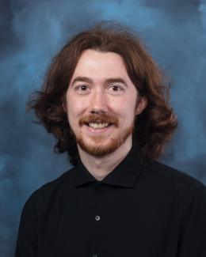

Oak Ridge National Laboratory
Postdoctoral Research Associate
Developing foundation models and reduced-order surrogates for turbulence, fluid mechanics, plasma edge dynamics, and multiscale physical systems.

Oak Ridge, TennesseeAbout
I’m a computational scientist working to bring machine learning and first-principles modeling closer together.
At Oak Ridge National Laboratory, I develop large-scale AI models for complex fluid dynamics. My work spans fusion plasma, cardiovascular flow, reduced-order modeling, and high-performance computing—always with the same aim: useful scientific models that remain connected to the physics they represent.
Experience
Postdoctoral Research Associate
Developing foundation models and reduced-order surrogates for turbulence, fluid mechanics, plasma edge dynamics, and multiscale physical systems.
Graduate Research Assistant · University of Utah
Built data-driven frameworks for cardiovascular flow, including nonlinear dimensionality reduction, 4D-flow MRI reconstruction, and physics-constrained neural differential equations.
Graduate Research Assistant
Developed neural PDE methods and automated high-fidelity fluid–structure interaction workflows for blood-flow modeling.
Simulation Engineer Intern
Applied computational fluid dynamics to laser welding and reactor simulations using OpenFOAM.
Education
University of Utah
Scientific machine learning for data-driven cardiovascular flow modelingBudapest University of Technology and Economics
Fluid mechanics and computational modelingBudapest University of Technology and Economics
Control, simulation, and mechanical systemsHave a research question or collaboration in mind?
csalahunor@hotmail.com ↗